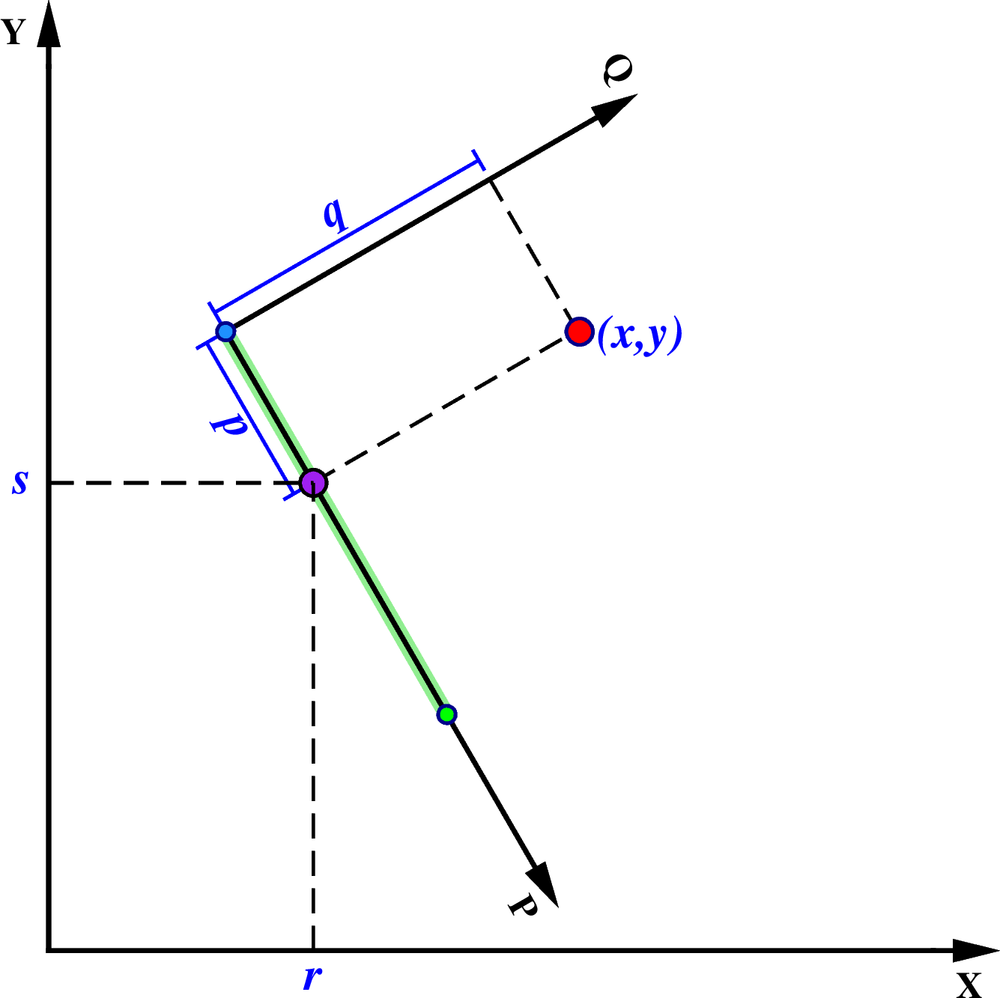

project¶
| 官方文件: | project |
|---|---|
| 簡介: | 生成測線、將數據點投影到測線上 |
該模塊具有三個主要功能：
- 生成測線
- 指定測線和數據點，得到該點在測線座標系下的座標，即下文中提及的
p和q - 指定測線和數據點，得到該點在測線上的投影點的座標，即下文中提及的
r和s
以上三個功能均要求用戶首先定義測線，測線可以用如下三種方式中的任意一種來定義：
- 用
-C選項定義測線的起點，並用-A定義測線方位角 - 用
-C選項定義測線的起點，並用-E選項定義測線的結束點 - 用
-C選項定義測線的中心，並用-T選項定義rotation pole的位置
在指定測線後，如果要生成測線，輸出測線上的點的座標，可以使用 -G 選項。在指定測線後，用戶再給出一個點(x,y) ，可以得到該點在測線的投影點以及該點在測線座標系下的座標:
x y z p q r s
其中：
x和y是數據在原座標系下的座標z是輸入數據中的其餘所有列p和q是數據點 (x,y) 在測線座標系下的座標r和s是數據點 (x,y) 在測線上的投影點在原座標系下的座標
可以使用 -F 選項設置要輸出哪些變量。
下面詳細解釋一下這些變量的物理意義。

{kind=link}
project 示意圖
圖中的紅點就是給出的點(x,y)。綠色粗線爲測線。測線上有 3 個點，藍色和綠色兩個點爲測線的起點和終點。以測線起點爲原點，以測線爲P軸，在測線起點按右手螺旋法則做垂直於P軸的Q軸，構成測線座標系。點(x,y)在測線座標系的座標即爲(p,q)。紫色點爲點(x,y)在測線上的投影點，座標爲(r,s)。
必選選項¶
-C<cx>/<cy>- 對於定義1和2而言，該選項指定測線的起點座標；對於定義3而言，該選項指定了旋轉座標下零經線所穿過的點
可選選項¶
-A<azimuth>- 定義1中用於指定測線的方位角
-E<bx>/<by>- 定義2中用於指定測線的終點
-F<flags>指定輸出格式，
flags可以是xyzpqrs的任意組合。默認輸出格式爲
xyzpqrs。若使用-G選項，則輸出格式爲rsp-G<dist>[/<colat>][+h]生成測線模式。
該選項用於生成測線，此時不需要輸入文件。
<dist>的單位規定見-Q選項。輸出數據有三列：經度、緯度以及當前點離測線起點的距離。默認情況下，會按照大圓路徑生成測線，當使用定義2 指定測線的兩個端點時，可以通過指定<colat>來生成小圓。若使用
+h則會在段頭記錄中報告pole的位置。-L[w][<l_min>/<l_max>]- 僅座標
p在<l_min>和<l_max>之間的數據會被投影到測線上。<l_min>和<l_max>的單位規定見-Q選項。如果是負數則表示反方向的數據範圍。若使用了-E選項，則可以使用-Lw來限制只繪製能投影到測線起點和終點之間的數據。 -N- Flat Earth。在平面內使用笛卡爾座標變換。默認使用球面三角。
-Q- 使用地圖單位。即投影假設x、y、r、s 的單位是弧度，p、q、
<dist>、<l_min>、<l_max>、<w_min>、<w_max>的單位是千米。若不使用該選項，則所有量都假設爲相同的單位。 -S- 將輸出按照
p增序排列。 -T<px>/<py>- 定義3中用於指定rotation pole的位置
-W<w_min>/<w_max>- 僅座標
q在<w_min>和<w_max>範圍內的數據纔會被投影到測線上。
示例¶
指定測線的起點和終點，在測線上每隔10千米生成一個點:
gmt project -C-50/10 -E-10/30 -G10 -Q > great_circle_points.xyp
指定測線的起點和終點，沿着colatitude=60的小圓上，每隔10千米生成一個點:
gmt project -C-50/10 -E-10/30 -G10/60 -Q > small_circle_points.xyp
利用 -F 選項指定輸出哪些座標來得到某點在某測線上的投影點:
echo 102 30 | gmt project -C103/31 -A225 -L0/500 -Frs -Q
已知某點，根據方位角和大圓距離計算另一點。已知一點(120, 25)，根據方位角 45 度，大圓距離 123 千米的點位置
gmt project -C120/25 -A45 -L0/123 -G123 -Q | tail -1